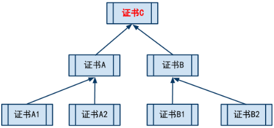

数字证书学习笔记
CA（Certificate Authority[səˈtɪfɪkət,əˈθɔ:rəti]）：证书授权中心
基本概念
数字证书体系如图所示： 
其中，证书C即所谓的根证书，它由CA（Certificate Authority[səˈtɪfɪkət,əˈθɔ:rəti]，证书授权中心）持有，体系中的其他证书由CA颁发。只要根证书是可信任的，那么树中所有证书都是可以被信任的。
具体原理
证书中包含：
- 证书的发布机构,一般是CA（个人理解就是上图中证书的父节点）
- 有效期
- 证书所有者
- 所有者的公钥
- 用CA私钥加密过的 以上内容的数字签名（指纹）
流程
证书所有者申请证书时，CA会把证书的发布机构、有效期、证书所有者、所有者的公钥用某个哈希算法（指纹算法）算出哈希（指纹），并把这个哈希算法和哈希用CA的私钥加密后挂到证书后面，即上面第五条内容。
用户拿到证书后，先用CA公钥解密上面第五条内容获得哈希（指纹）和哈希算法（指纹算法），然后用这个哈希算法计算其他四项内容的哈希，如果和算出的哈希（指纹）和记录的哈希（指纹）相同，那么说明证书是正确的。然后就可以开心地用证书里的所有者的公钥和证书所有者进行不可告人的通信了。
申请证书一般是需要收费的。